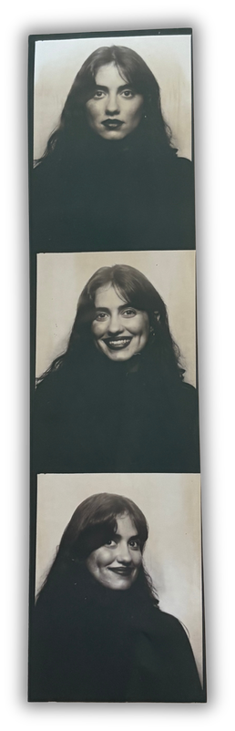

about chloé
I love many many things including:
astrology, boredom, clocks, dachshunds, david lynch, early morning, faulkner, gouache, hiking, impressionism, jumping into bodies of water, keegan (claire), letter writing, magical realism, neroli, on the calculation of volume, point reyes, qualia, reality tv, speech act theory, tulips, umbrellas with ducks for handles, vigdis hjorth, wayne thibaud, wool sweaters, xerxes blue, yearning, zora neale hurston
and I wanted a place to keep them all.
find me at @chloegoslowly,
by email at chloegoslowly@gmail.com,
by crow, or serendipitously on a walk in San Francisco.